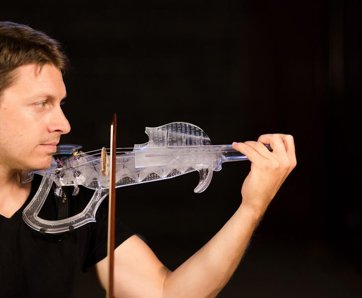

Что такое 3д принтер?
3Д-принтер – устройство, которое обрабатывает трехмерную компьютерную модель и на основании полученных данных строит объемный предмет. Чаще всего объекты создаются с помощью послойного наплавления пластика или застывания специальной смолы.
Вне зависимости от применяемой технологии, принтер отлично подходит для изготовления твердых изделий, имеющих сложную форму. Благодаря этому трехмерное моделирование применяют в самых разных сферах: от производства сувениров до строительства зданий.
Всем, кто интересуется 3D-принтерами, стоит ознакомиться с реальными ситуациями его применения. Обычные пользователи расширят свой кругозор, а потенциальные предприниматели увидят интересные возможности для создания бизнеса.
Где применяется 3D-принтер?
Как уже отмечалось, 3D-принтеры изготавливают объемные изделия, используя в качестве основы специальные компьютерные модели. Такой метод производства обладает следующими преимуществами:
- создание предметов любой формы и сложности;
- высокая скорость работы;
- небольшое количество брака;
- применение самых разных материалов (от металлизированных пластиков до пищевых продуктов).
Использование в быту и в домашних условиях
Изначально принтеры были довольно сложными и дорогими техническими устройствами, которыми пользовались лишь ученые и специалисты. В наши дни принтер может приобрести любой желающий, так как на рынке работают много производителей (как отечественных, так и зарубежных).
Благодаря доступности трехмерного моделирования активно развивается производство различных предметов прямо на дому. К наиболее распространенным изделиям относятся:
- игрушки;
- сувениры и подарки;
- небольшие запчасти для автомобилей, электронной и бытовой техники;
- мебельная фурнитура;
- чехлы для смартфонов;
- кухонные принадлежности;
- всевозможные украшения и поделки.

В аэрокосмической промышленности
Оказывается, 3Д-принтеры могут печатать не только игрушки и маленькие детали. Уже сейчас аэрокосмическая и авиастроительная промышленность пользуется возможностями трехмерной печати. Так, всемирно известная компания Boeing и американская корпорация Lockheed Martin уже приступили к созданию деталей двигателя и несущих элементов конструкции. Предметы изготавливают из цельнометаллических материалов по технологии лазерного спекания.

В космосе и для космоса
Трехмерное моделирование может стать очень важной технологией в космической сфере. К примеру, компания SpaceX презентовала корабль Dragon v2, в двигателе которого используются напечатанные детали.
Применение 3D-печати не ограничивается наземной промышленностью: в 2016 году NASA отправила на МКС специальный 3Д-принтер, способный работать в условиях невесомости. С его помощью можно провести различные тесты, однако более важно, что космонавты могут самостоятельно создавать необходимые им предметы, не дожидаясь прибытия корабля с Земли.

В архитектуре
Создание трехмерных объектов – идеальная технология для архитектуры, поскольку с помощью макетов дизайнеры и инженеры могут максимально точно увидеть воплощение придуманного объекта. Разумеется, архитектурные макеты применялись и ранее, но печать на принтере значительно облегчает и ускоряет процесс разработки зданий.

Примеры работ в искусстве
Многие известные скульптуры, барельефы, архитектурные подвиги можно увидеть только в крупнейших музеях мира или непосредственно в том или ином городе. При желании можно приобрести реплику, но такие фигурки обычно стоят очень дорого и продаются далеко не везде. 3Д-принтер придет на помощь ценителям искусства: достаточно лишь загрузить в устройство модель, которую отсканируют музейные работники.
3D печать в медицине
Трехмерное моделирование – одна из наиболее перспективных новейших технологий, которые используются в медицине. В некоторых областях (например, в стоматологии) 3D-печать уже поставлена на поток, в других сферах ее развитие – вопрос ближайшего будущего.
Хирургическая подготовка
Трехмерное моделирование позволяет тщательно готовиться к операциям. 3D-сканеры дают наиболее точное изображение необходимого участка тела, после чего из компьютерной модели распечатывают копию и рассчитывают, каким образом прооперировать это место.
Протезирование
Напечатанные объекты пользуются высоким спросом в протезировании, так как 3D-печать позволяет изготавливать протезы самой сложной формы и учитывает все индивидуальные особенности тела.
Шведская фирма Arcam производит с помощью принтеров самые разнообразные протезы, в том числе цельнометаллические предметы. Их применяют как в более привычном протезировании конечностей, так и для замены костей или суставов.
Стоматология
Стоматологические протезы, коронки, элайнеры (пластиковые скобы) – именно те предметы, для создания которых лучше всего подходит 3Д-принтер для стоматологии. Компания Align Technology разработала метод, при котором ротовую полость сначала сканируют, а потом создают индивидуальный протез или скобу. Для производства используют технологию застывания жидкой смолы, поэтому готовые изделия обладают высочайшей степенью точности.
Продукты
Многие люди наслышаны о пищевых 3д принтерах, которые могут изготавливать еду самой причудливой формы. Действительно, 3D-принтеры вполне могут печатать горячим шоколадом, тестом, сахарным сиропом и прочими полужидкими продуктами (даже фаршем!).
Одно из таких устройств разработано фирмой Foodini – принтер использует любой продукт пастообразной консистенции. В отличие от обычных принтеров, пищевые модели плохо справляются с термической обработкой еды, но в скором времени эта проблема наверняка будет устранена.
Персонажи
Создание и коллекционирование фигурок известных личностей, героев фильмов, игр и комиксов – важная увлекательная сфера для многих людей. Трехмерное моделирование позволяет легко распечатать самую точную копию даже на простеньком домашнем принтере, так что любой желающий может собрать обширную коллекцию персонажей.
Музыкальные инструменты
Еще одна перспективная отрасль трехмерного моделирования. Профессиональные музыканты скажут, что действительно ценные инструменты разрабатываются годами и служат десятилетиями, так что их не может заменить наспех напечатанная деталь.
На самом деле некоторые части вполне можно печатать на принтере: гриф или деку изготавливают из древесного пластика, поэтому они ни в чем не уступят оригиналам. По части художественного оформления пластик точно превосходит привычные материалы: форма и дизайн музыкальных инструментов могут быть самыми неожиданными.
Виды 3д принтеров
В данной статье мы рассмотрим виды только домашних 3д принтеров. К ним относятся FDM и SLA.
FDM – это наиболее широко используемая технология 3D-печати. FDM принтеры в большом многообразии представлены на рынке. В основном это первая технология, с которой сталкиваются люди, когда начинают работать с 3D. Далее будут представлены основные принципы и ключевые аспекты этого способа печати.
Печать методом послойного наложения (FDM) представляет собой процесс аддитивного производства, который реализовывается благодаря экструзии материалов. В FDM, объект строится путем нанесения расплавленного материала по заранее установленному алгоритму, слой за слоем. Используемые материалы представляют собой термопластичные полимеры и имеют форму нити.
Процесс FDM печати

Вот как работает процесс FDM:
Катушка из термопластичной нити загружается в принтер. Как только сопло достигнет необходимой температуры, нить подается в экструдер и в сопло, где она плавится.
Экструдер прикреплен к 3-осевой системе, которая позволяет ему перемещаться в направлениях X, Y и Z. Расплавленный материал выдавливается в виде тонких нитей и наплавляется послойно в заранее определенных местах, где затем охлаждается и затвердевает. Иногда охлаждение материала ускоряется благодаря использованию вентиляторов, прикрепленных к экструдеру.
Для заполнения печатной области, экструдеру требуется несколько проходов. Когда слой закончен, платформа перемещается вниз (или, как в некоторых моделях принтеров - экструдер перемещается вверх), и новый слой наплавляется на уже схватившийся. Этот процесс повторяется, пока модель не будет напечатана целиком.
Характеристики FDM принтеров
Большинство систем FDM позволяют регулировать несколько параметров процесса печати. Такие как температура сопла, платформы, скорость печати, высоту слоя и скорость вентиляторов охлаждения. Они обычно устанавливаются оператором принтера, и не беспокоят моделлера.
Что важно с точки зрения моделирования, так это учитывать размер стола и высоту слоя самой детали:
Стандартный размер печатной области настольного 3D-принтера обычно составляет 200 x 200 x 200 мм, в то время как для промышленных машин он может достигать 1000 x 1000 x 1000 мм. Если настольный 3D принтер предпочтительнее (например, из соображений экономии), большУю модель можно разбить на более мелкие части и затем собрать/склеить.
Деформация детали
Деформация является одним из наиболее распространенных дефектов в процессе FDM печати. У некоторых видов пластика во время охлаждения после экструзии, происходит усадка. Поскольку разные участки охлаждаются с разной скоростью, их размеры также могут меняться с разной скоростью. Дифференциальное охлаждение вызывает накопление внутренних напряжений, которые вытягивают слой, тот, что снизу – наверх, деформируя его, как показано на рисунке ниже. С технической точки зрения, деформацию можно предотвратить путем более тщательного контроля температуры платформы и камеры в целом. За счет увеличения адгезии между деталью и платформой.

Вот примеры различных вариантов деформации, с которыми вы можете столкнуться:
Большие плоские области (например, прямоугольная коробка) более склонны к деформации, и следует избегать такого рельефа, если это возможно.
Тонкие выступающие элементы (например - зубцы, шпили) также склонны к деформации. В этом случае можно избежать её, добавив немного материала поддержки по краю тонкого элемента (например, прямоугольник толщиной 200 микрон), чтобы увеличить площадь контакта.
Острые углы деформируются чаще, чем закругленные формы, поэтому слегка сгладив углы, можно добиться хорошего результата.
Адгезия между слоями
Хорошая адгезия между слоями очень важна для детали, напечатанной по технологии FDM. Когда расплавленный пластик выдавливается через сопло, он прижимается к предыдущему слою. Высокая температура и давление вновь расплавляют поверхность предыдущего слоя и позволяют связать новый слой со старым.
Прочность связи между различными слоями всегда ниже, чем базовая прочность материала.
Это означает, что детали произведённые по технологии FDM, по своей природе анизотропны: их прочность по оси Z всегда меньше их прочности в плоскостях X/Y. По этой причине важно помнить об ориентации деталей при проектировании.
Более того, поскольку расплавленный материал прижимается к предыдущему слою, его форма деформируется до овала. Это означает, что детали всегда будут иметь волнистую поверхность, даже при небольшой высоте слоя, и что мелкие элементы, такие как небольшие отверстия, могут нуждаться в последующей обработке после печати.


Поддержки
Структура поддержки имеет важное значение для создания геометрий с выступами. Поскольку пластик не может быть нанесён на воздух, для некоторых геометрий требуется опорная конструкция.
Опоры обычно печатаются из того же материала, что и деталь. Существуют также специальные материалы, которые растворяются в жидкости, но в основном они используются в настольных или промышленных 3D-принтерах высокого класса. Печать на растворимых поддержках значительно улучшает качество поверхности детали, но увеличивает общую стоимость печати, так как требуется специальный принтер с двумя печатающими головками и потому что стоимость растворимого материала относительно высока.

Заполнение и толщина оболочки
Детали по технологии FDM обычно не печатаются заполненными, чтобы сократить время печати и сэкономить материал. Вместо этого внешний периметр делается с помощью нескольких проходов, он называется оболочкой, а внутренняя часть заполняется структурой низкой плотности, называемой заполнением.
Заполнение и толщина корпуса сильно влияют на прочность детали. Для настольных FDM-принтеров в основном подходит плотность заполнения 25% и толщина корпуса 1 мм. Обычно, это стандартные настройки для быстрой печати и хороший компромисс между прочностью и скоростью.

Выше вы видите внутреннюю геометрию деталей с различной степенью заполнения
Основные расходные материалы FDM
Одной из сильных сторон FDM печати является широкий ассортимент доступных материалов. Они могут варьироваться от обычных пластиков (таких как PLA и ABS) до инженерных (таких как, TPU и PETG) и высокопрочных материалов (таких как PEEK).
Ниже изображена пирамида материалов, наиболее доступных в FDM печати.

Используемый материал напрямую влияет на механические свойства и точность печати, а также на ее цену. Наиболее распространенные материалы FDM-печати приведены ниже. Так же рассмотрим плюсы и минусы тех или иных пластиков. Обзор основных отличий PLA и ABS.
ABS
Плюсы:
- Прочность
- Хорошая термостойкость
Минусы::
- Дает усадку при печати